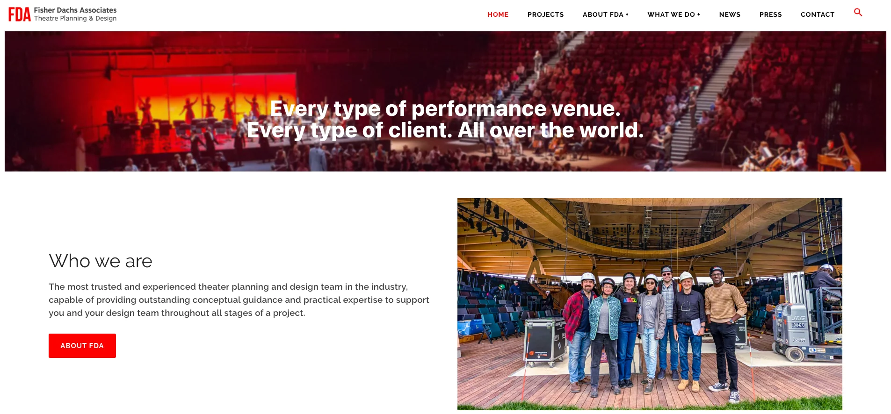

Where the work was
Syracuse, NY
2005–2010
Syracuse University
VIP Structures (internship)
Middlebury, VT
Bread Loaf (internship)
the plan: a small firm in Vermont
2008: the recession
New York City
2010
Rafael Viñoly
2010
ZGF Architects
2012
Fisher Dachs Associates
Thank you Connie Caldwell for
remembering that weird dude!
